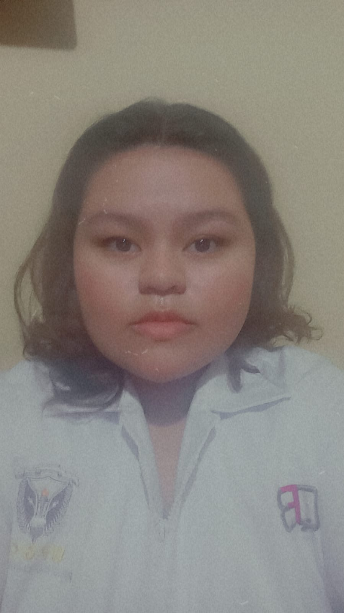

INTEGRANTES
DE DESARROLLO DE LA PAGINA
Coutiño Jimenez Angel Gabriel
Desarrollador de la pagina y de los temas "Tincion de Romanowsky" y "Usos y aplicaciones clinicos del frotis sanguíneo"
Futuro QFB
Aguilar Robles Christian Ivan
Desarrollador del tema de Frotis y sus pasos
Futuro QFB
López Santos José Alexander
Desarrollador del tema de Tinciones y microscopio
Futuro QFB

Ruiz Álvarez Fulvia Alejandra
Desarrolladora de la introduccion y pasos de un frotis
Futura QFB
Sánchez Venturas Alfred Hazael
Desarrolladordel tema de tinciones Giemsa, romanowsky y wright
Futuro QFB
Citas bibliográficas
Henry, J. B. (2011). *Henry’s Clinical Diagnosis and Management by Laboratory Methods* (22nd ed.). Saunders.
Hoffbrand, A. V., & Moss, P. A. H. (2016). *Hoffbrand’s Essential Haematology* (7th ed.). Wiley-Blackwell.
McKenzie, S. B. (2019). *Clinical Laboratory Hematology* (3rd ed.). Pearson.
Turgeon, M. L. (2018). *Clinical Hematology: Theory and Procedures* (6th ed.). Wolters Kluwer.
Henry, J. B. (2011). Henry’s Clinical Diagnosis and Management by Laboratory Methods (22nd ed.). Saunders.
odak, B. F., Fritsma, G. A., & Doig, K. (2020). Hematology: Clinical Principles and Applications (5th ed.). Elsevier.
UNIVERSIDAD PABLO GUARDADO CHAVEZ
Libramiento Nte. Ote. 3450, Amp las Palmas, 29040 Tuxtla Gutiérrez, Chis.
Numero de contacto: +52 1 966 102 1955
frotissanguineo@gmail.com
Síguenos en:
Nuestra página de Instagram proporciona imágenes informativas
Encuesta de satisfacción
Esta encuesta es para saber si usted esta satisfecho con la pagina y su informacion, realizando una breve encuesta.